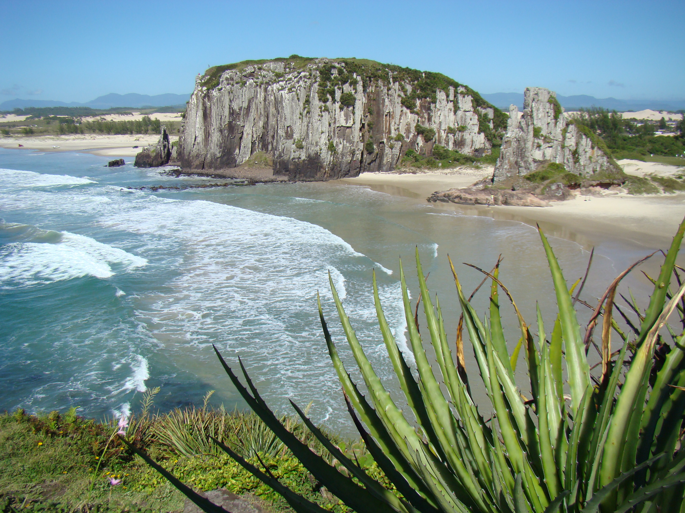
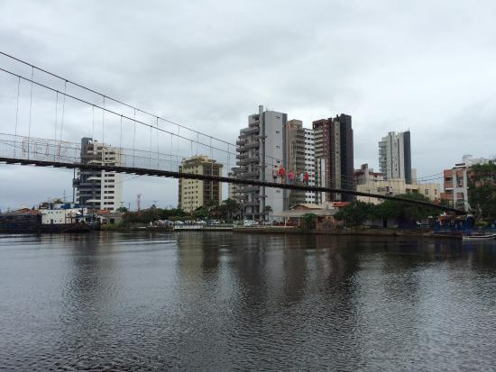
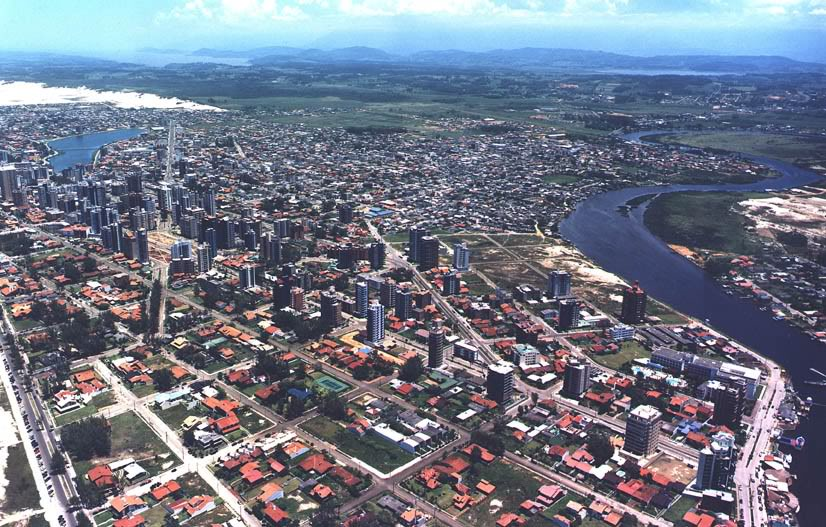

Torres-RS
Torres é um município brasileiro situado no extremo norte do litoral Atlântico do estado do Rio Grande do Sul. A paisagem da cidade se destaca por ser a única praia do Rio Grande do Sul em que sobressaem paredões rochosos à beira-mar, e por ter à sua frente a única ilha marítima do estado, a Ilha dos Lobos.
  A área onde hoje se encontra a cidade tem sido habitada pelo homem desde há milhares de anos, existindo testemunhos físicos na forma de sambaquis e outros achados arqueológicos. No século XVII, durante a colonização do Brasil pelos portugueses, por estar encravado em um estreitamento da planície costeira sulina, o local passou a se constituir rota de passagem obrigatória para os tropeiros e outros desbravadores e aventureiros luso-brasileiros vindos do norte pelo litoral - a única outra passagem que havia então era por cima do planalto de Vacaria - e que buscavam os rebanhos livres de gado que se multiplicavam no pampa mais ao sul e caçavam os indígenas para fazê-los escravos. Muitos acabaram por se fixar na região e se tornaram estancieiros e pequenos agricultores. E por dispor de morros junto à praia, logo foi reconhecido seu valor estratégico como ponto de observação e controle de passagem, de importância militar e política no processo de expansão do território português sobre o espanhol. Foi fundada ali na última quadra do século XVIII uma fortificação, que entretanto logo foi desmantelada quando a conquista se efetivou.
CIDADE DE ORIGEM: